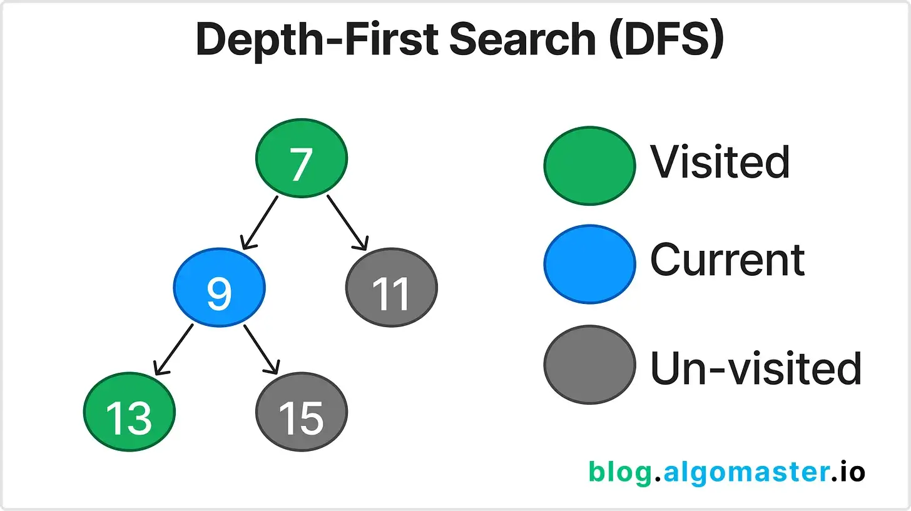

← К содержанию
11. Depth-First Search (DFS)
DFS — паттерн для поиска в глубину в графах, деревьях и матрицах. Используется для поиска путей, компонент связности, топологической сортировки и др.
Когда использовать?
Когда задача требует полного обхода структуры данных, поиска всех путей, компонент, циклов, проверки достижимости.
Объяснение

- DFS реализуется рекурсивно или с помощью стека.
- В графах важно отмечать посещённые вершины, чтобы избежать зацикливания.
- В деревьях DFS часто используется для обхода, поиска пути, подсчёта значений.
- В матрицах DFS применяется для поиска островов, областей, кластеров.
- Паттерн встречается в задачах на лабиринты, компоненты связности, топологическую сортировку, поиск циклов.
Пример задачи
Вход: grid = [["1","1","0","0"],["1","0","0","1"],["0","0","1","1"]]
Задача: Найти количество островов (областей из единиц).
Выход: 2
Swift пример
func numIslands(_ grid: [[Character]]) -> Int {
var grid = grid
let rows = grid.count, cols = grid[0].count
var count = 0
func dfs(_ r: Int, _ c: Int) {
if r < 0 || c < 0 || r >= rows || c >= cols || grid[r][c] == "0" { return }
grid[r][c] = "0"
dfs(r+1, c); dfs(r-1, c); dfs(r, c+1); dfs(r, c-1)
}
for r in 0..<rows {
for c in 0..<cols {
if grid[r][c] == "1" {
count += 1
dfs(r, c)
}
}
}
return count
}
LeetCode задачи
Дополнительный пример
Вход: graph = [[1,2],[0,2],[0,1,3],[2]]
Задача: Проверить, есть ли цикл в графе.
Выход: true
Советы и типичные ошибки
- Не забывайте отмечать посещённые вершины.
- В рекурсивной реализации следите за глубиной стека (Stack Overflow).
- В задачах на поиск всех путей используйте backtracking.
- Внимательно относитесь к условиям выхода из рекурсии.
Связанные паттерны
Дополнительные ресурсы